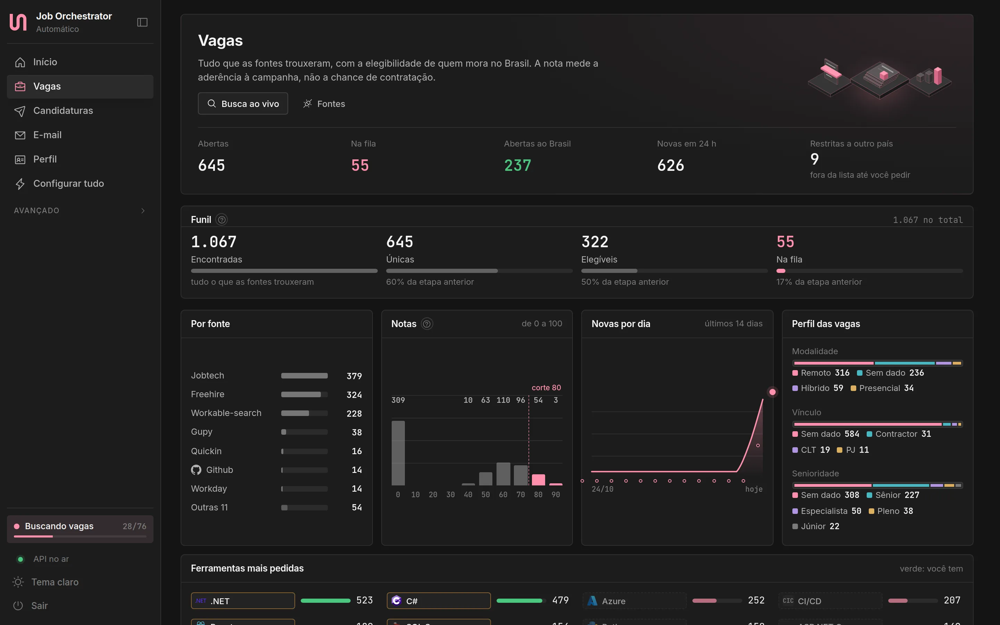
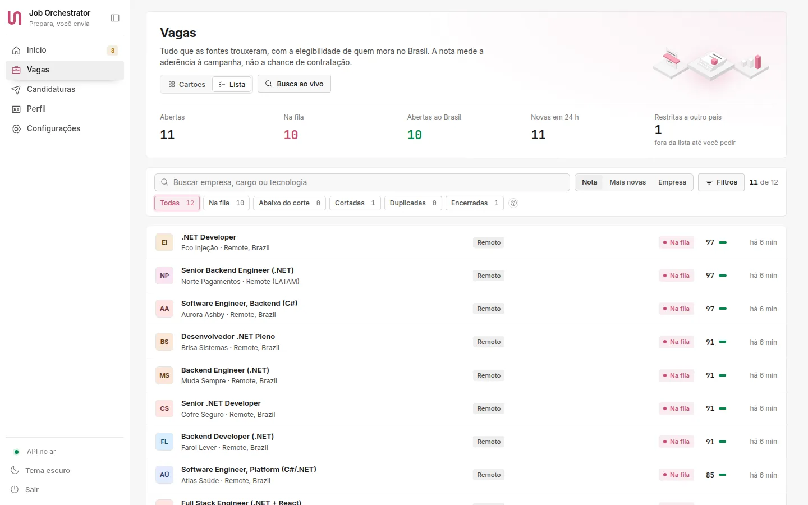
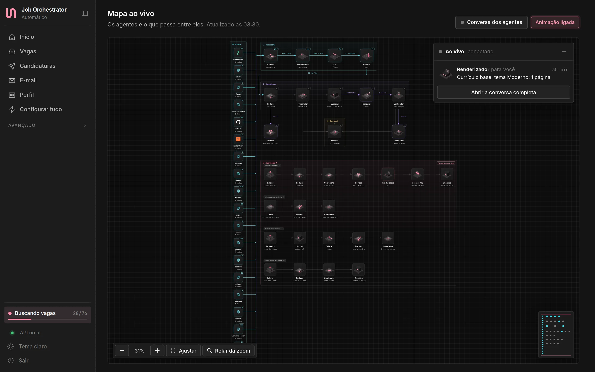
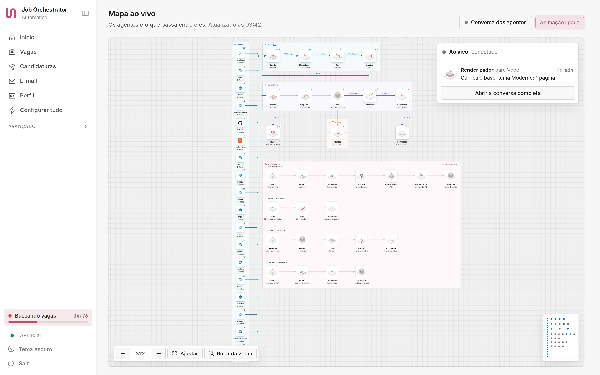
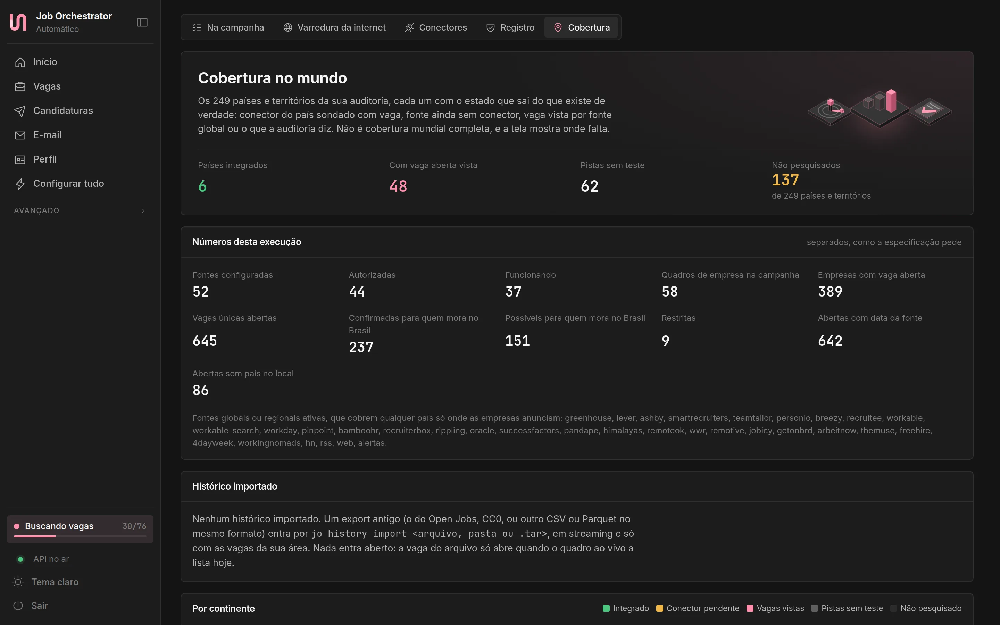
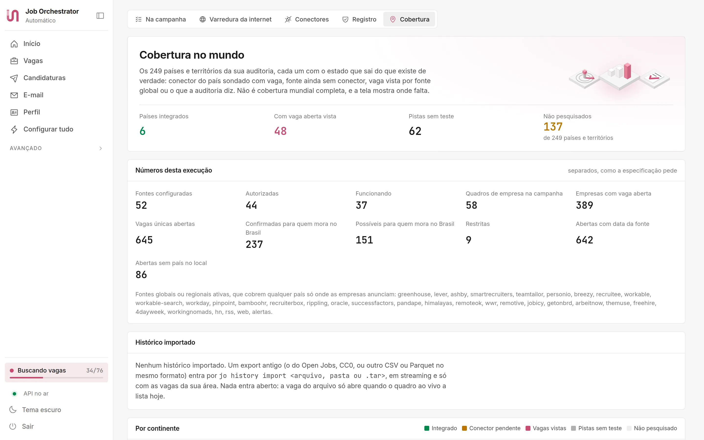
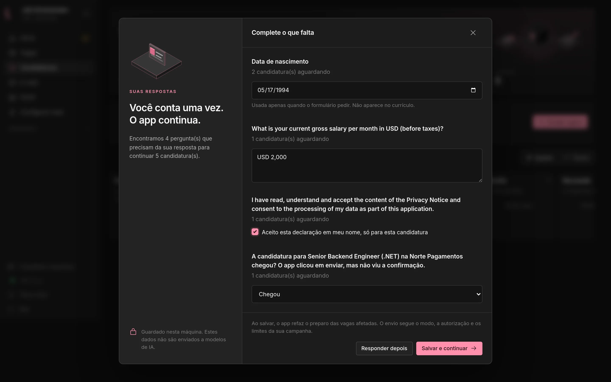
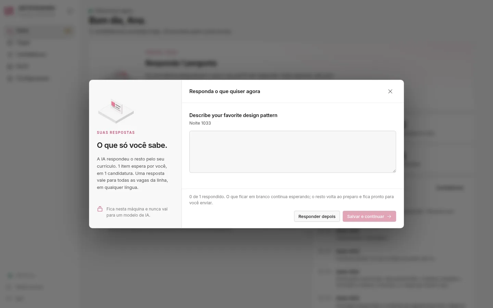

Your profile
Name, contact, the résumé written for the job, the salary floor of each contract and currency, and the years with each technology counted from the dates of your jobs.
A local app that finds openings, writes a résumé for each one from your own facts, fills the application form with your AI models and sends it within the limits you set.
Reading your CV, scoring jobs and drafting text run on Ollama, on your GPU when the machine has one.
CV, profile, résumés and history live in your user folder. The panel only listens on 127.0.0.1.
Applications go out under an authorization you give: the minimum score, the daily limit and the end date are yours to set, and one click revokes it.


Forms
Greenhouse, Lever, Ashby, Workable and SmartRecruiters forms, and the open forms of any career site without a login, are filled field by field. Each answer comes from one of three places, in this order.
Name, contact, the résumé written for the job, the salary floor of each contract and currency, and the years with each technology counted from the dates of your jobs.
Open questions and choices go to the local model first. What it gets wrong goes to ChatGPT, then to Claude, each one told why the last answer was refused. A written answer that names a tool, a company or a number your profile does not have is refused.
What only you know, such as your birth date, your current pay or a privacy box, is asked in one window. The answer stays on this machine, never reaches a model, and every form that asks again gets it.
How it works
The Scout checks 52 sources through their official APIs or public pages, from career sites on Greenhouse, Lever, Ashby and Workday to Gupy, public employment services and the job alerts in your inbox. Every 10 minutes the Explorer looks for new sources from your CV.
Duplicates across boards become one job, openings restricted to countries where you cannot work leave the queue, and each remaining job gets a score from 0 to 100 with the reasons written out.
The Writer builds a résumé for each job from facts found in your CV, your LinkedIn export and your profile. A checker ties every line to its source, a reviewer from another model family reads it again, and an ATS inspector parses the final PDF.
Forms are filled in a real browser and sent under your authorization, with the score, the daily limit and the end date you chose. Every send waits for the site's confirmation; one the app cannot confirm is asked to you. CAPTCHAs and logins stay with you.
With read-only access to Gmail, replies move each application along the funnel. Every application keeps an append-only history and a proof of submission.
Self-hosted
The app, its database, the browser automation, the scraper and the AI model run on your computer. There is no Job Orchestrator account, server or subscription.
~/.local/share/job-orchestrator, ~/Library/Application Support/JobOrchestrator or %LOCALAPPDATA%\JobOrchestrator.Plays by the rules
Its terms forbid it. Import your LinkedIn data export instead, and save LinkedIn jobs by link.
When a site blocks automated access, that source is skipped.
The scraper follows robots.txt, waits between requests and opens one connection per site.
Sources whose terms do not allow this use stay registered as blocked or partner-only, with the reason in view.
A closer look






Open jobs, the funnel from found to queued, jobs per source and the tools employers ask for most.
Every agent and what passes between them, updated while the search runs.
249 countries and territories: where a source works, where jobs show up and what is still unchecked.
What only you can answer, asked once, with how many applications wait for each answer. The answers stay on your machine.
The interface is in Brazilian Portuguese. Résumés and answers come out in Portuguese for jobs in Brazil and in English everywhere else.
Recruiters will publish jobs straight on the platform and use the people registered on it as their talent base, under the same rules. Each person will decide whether to be found, by which companies and with how much detail.
Hire with everyone's GPU. See only who said yes.
One call goes out. Every machine it reaches checks the job against its owner's profile on its own GPU, and only the people who say yes become visible.
Written from a few lines or a voice note, checked against what the law forbids in job ads and published on the company's own domain.
Each candidate's machine scores the call with its own model. No central database to leak, sell or train on.
People turn on open to offers and choose which companies see them and how much.
Nothing leaves the candidate's machine before a yes, not even a seen.
Requirement by requirement, in blind mode first, and a person makes every rejection.
Interview times and standard answers worked out by the two apps, live on both screens.
Signed receipts, an answer deadline and the reason behind every rejection.
Talent pools hold people only until their consent expires, and one click revokes it.
Lines it will not cross
In design for a future version. Not in the current release, and the details may change. Read the full plan
Download
Each download is a single self-contained executable with the panel, the scraper and the browser extension inside. You do not need .NET installed.
curl -fsSL https://gabrielandre-math.github.io/job-orchestrator/install.sh | shirm https://gabrielandre-math.github.io/job-orchestrator/install.ps1 | iexThe command downloads the same release file, checks its SHA-256 and opens the app's installer. A file fetched this way is not marked as downloaded from the internet, so macOS and Windows open it without the warning they show for apps without a paid signature. Read the script.
Or download the file for your system
chmod +x the installer and run it. No sudo.
macOS 15 or later. Signed ad hoc: if macOS refuses to open it, use Open Anyway in Privacy & Security, or run xattr -dr com.apple.quarantine "/Applications/Job Orchestrator.app".
SmartScreen may say Windows protected your PC: click More info, then Run anyway. The arm64 build is experimental.
job-orchestrator # opens the app; the first time, the installer
job-orchestrator --status # shows whether it is running
job-orchestrator --backup # copies the database now
job-orchestrator --mcp # MCP server for Claude Code and Claude Desktop
job-orchestrator --uninstall # removes the app and keeps your dataUnder the hood
.NET 10, a modular monolith in vertical slices with DDD and CQRS, an outbox and an inbox for events, Carter endpoints and Dapper over PostgreSQL.
Angular 22 with signals. The live map is a hand-drawn SVG canvas, and every isometric icon comes from one shared geometry.
Official APIs first, Scrapy spiders for career pages and a Playwright browser pool for pages that need JavaScript and for forms.
Unit and end-to-end suites against a fake ATS, chaos tests that kill the process around the submit click and a night rehearsal of hours. Each release is built by GitHub Actions from the tested commit, with its SHA-256 and source revision.
License
Use it, study it, change it and share it for any noncommercial purpose, and that includes your own job search. Selling it, offering it as a paid service or building it into a commercial product is not allowed. For commercial use, talk to the author.
Read the licenseAuthor
Designed and built Job Orchestrator, from the local AI pipeline to the isometric stations. Bug reports and ideas are welcome in the issues.
@gabrielandre-math